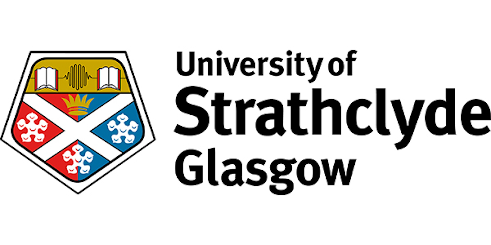
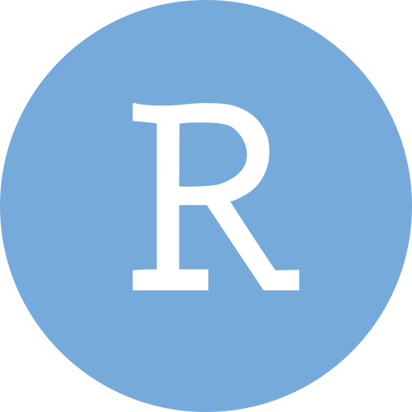
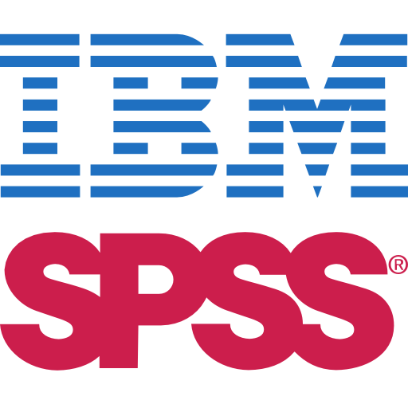
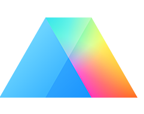

Amr Mahmoud
With a PhD in Pharmacology and an MSc in Applied Statistics, I combine pharmacology and biostatistics to help researchers in the health sciences design rigorous studies, analyze their data, and publish reliable results. Over the past two decades, I have taught hundreds of students and collaborated on many research projects. I'm passionate about statistics and love demystifying complex concepts and methods to make them accessible to learners at all levels.
Why I built AMRBiostats
In my own journey learning statistics, I often struggled to find reliable resources that explain concepts and methods clearly, or that suggest alternative approaches when a model's assumptions aren't met. The statistical jargon made it harder still because it was rarely explained in plain terms. So I built AMRBiostats, hoping it can be a hub of trusted biostatistics tutorials and resources that makes learning easier.
Education

MSc in Applied Statistics (Health Sciences)University of Strathclyde, UK 2021–2024Statistical tools I teach and use
 R
R

RStudio
SPSS Minitab
GraphPad Prism Jamovi